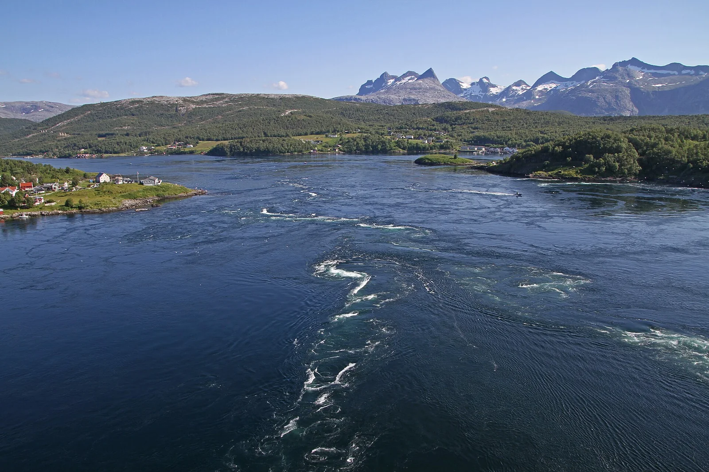

Saltstraumen
Bodø, Nordland, Norvège · plongée

Étroit chenal près de Bodø où passe l’un des courants de marée les plus puissants du monde, avec des tourbillons visibles depuis le pont. Entre deux marées, la plongée révèle une vie foisonnante sur les parois.
- Lieu
- Bodø, Nordland, Norvège
- Niveau
- Expert
- Activités
- plongée
- Type d'eau
- Mer / océan
- Coordonnées
- 67.23, 14.62 (position approximative du secteur)
Dangers à connaître
- Courant de marée extrêmement violent et tourbillons hors de l’étale : danger mortel.
- Eau froide : combinaison étanche et expérience en eau froide recommandées.
- Passage de bateaux dans le chenal.
Le conseil d'Ocean Buddy
Ne plonge qu’à l’étale, avec un club ou un guide local qui connaît les horaires exacts du courant.
Ouvrir dans Ocean Buddy Télécharger sur l'App Store
Source : Fiche Ocean Buddy · septembre 2026 · à vérifier localement.